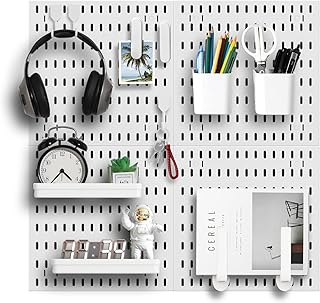

The design ethos behind the TerraForm Wallscape Kit is undeniably rooted in a sophisticated minimalism that speaks directly to the discerning eye. Its framework, crafted from materials that suggest both durability and an understated elegance, forms a clean backdrop for the air plants it cradles. The individual modules appear to float, creating a compelling visual rhythm that can be customized to suit varying wall dimensions and personal artistic inclinations. This modularity is a testament to thoughtful design, allowing for an organic expansion or re-arrangement that mirrors the adaptive nature of living ecosystems. Far from a mere decoration, it functions as an architectural feature, drawing the eye upward and imbuing the space with an immediate sense of curated tranquility and natural grace, seamlessly complementing the clean lines often found in modern interiors.
Beyond its aesthetic appeal, the TerraForm kit demonstrates remarkable attention to real-world utility and material integrity. The assembly process is intuitively designed, presenting a gratifying DIY experience that requires minimal specialized tools, ensuring that even novices can achieve a professional-looking installation. Components fit precisely, indicating superior manufacturing standards and a commitment to longevity. The housing for the air plants themselves is engineered to provide adequate air circulation and easy access for maintenance, which is crucial for the health and vibrancy of tillandsias. The chosen materials—a blend of refined metals and sustainably sourced natural hardwoods—not only contribute to its refined appearance but also promise resilience against the passage of time. This thoughtful balance of form and function positions the TerraForm Wallscape Kit as a durable and rewarding investment for enhancing a modern living environment.
This elegant DIY kit transforms any bare wall into a captivating vertical garden, introducing serene natural beauty into contemporary spaces. It offers a unique opportunity to cultivate a living art display that refreshes the ambiance of modern loft apartments.
View Current Price| Material | Powder-Coated Steel and Natural Hardwood |
| Key Feature | Modular, Customizable Vertical Display System |
| Aesthetic Style | Modern Biophilic Minimalist |